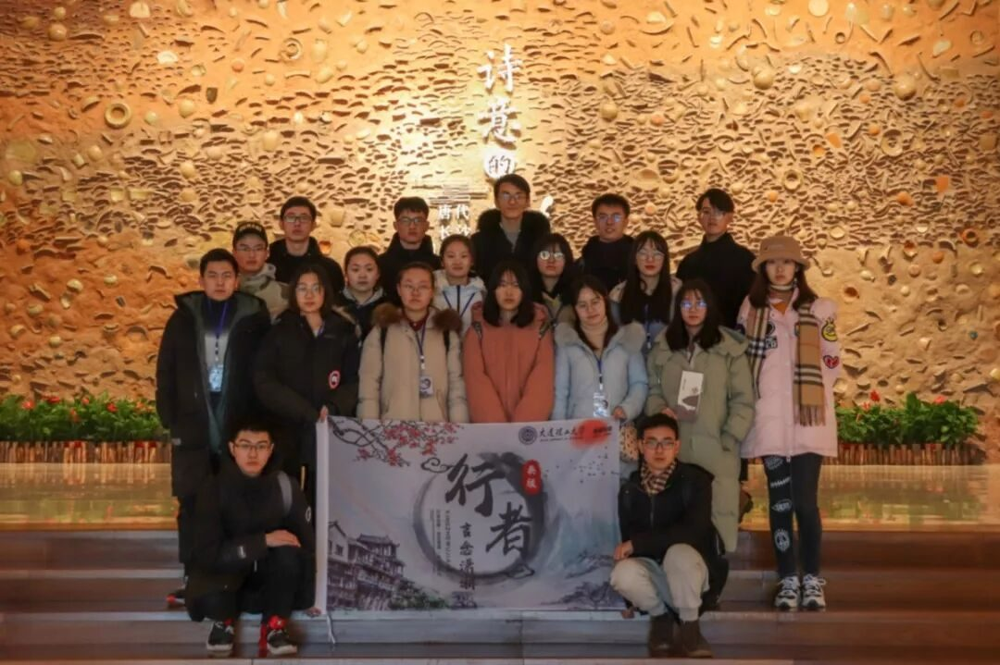
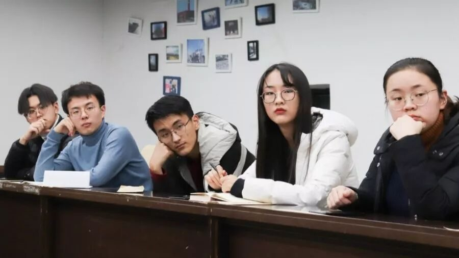
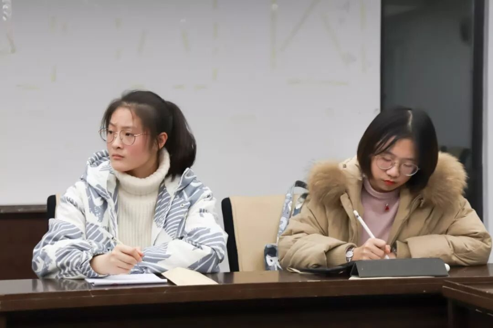
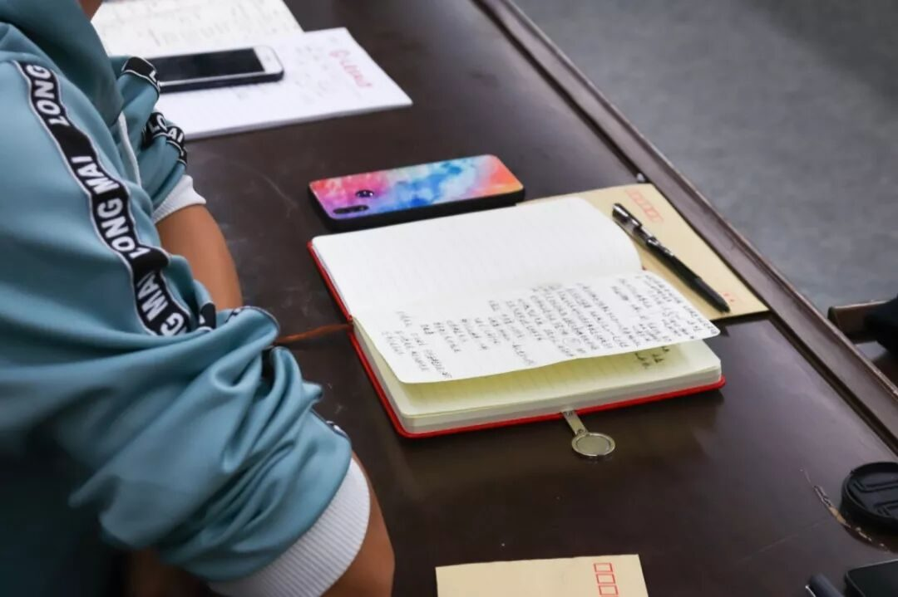
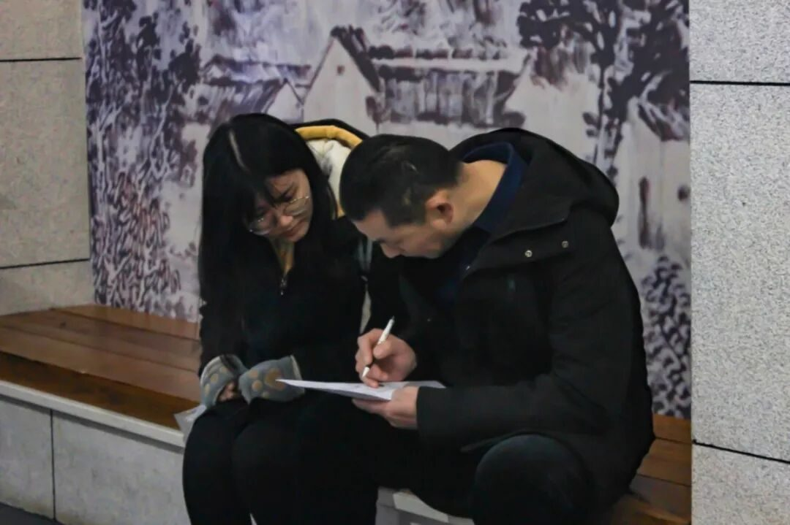
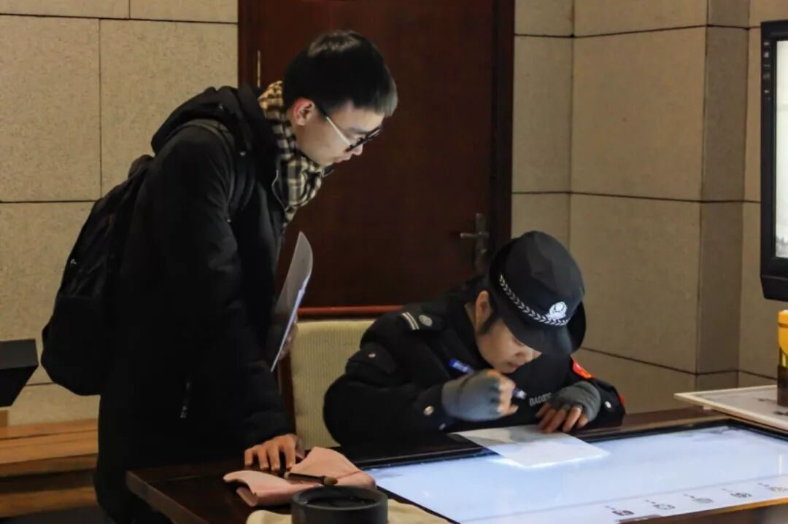
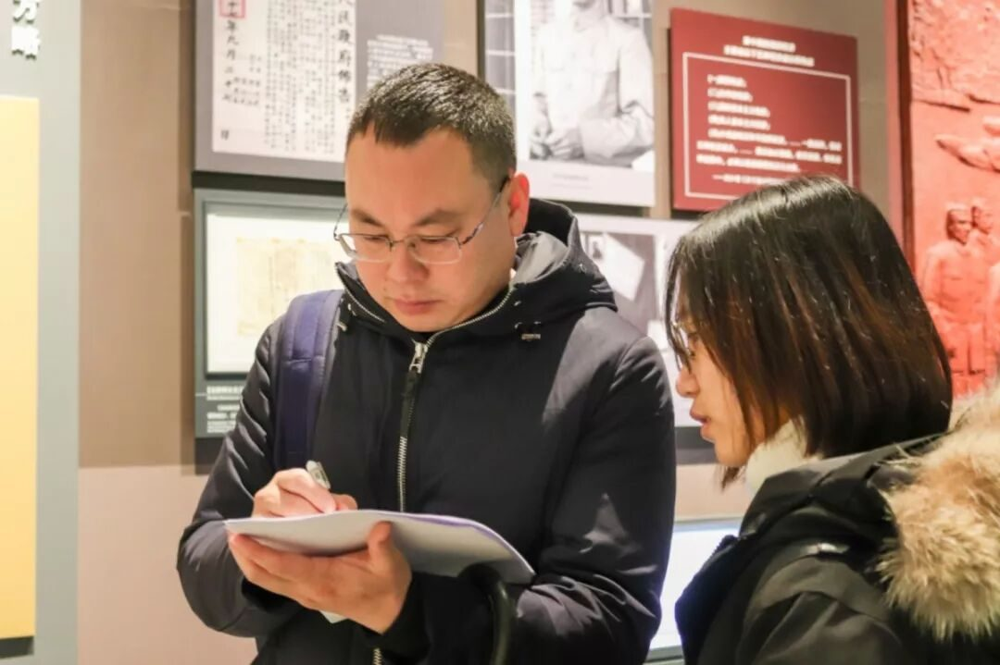
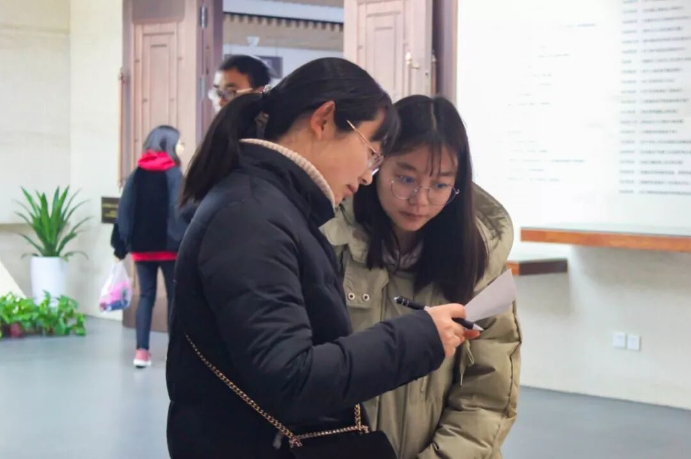
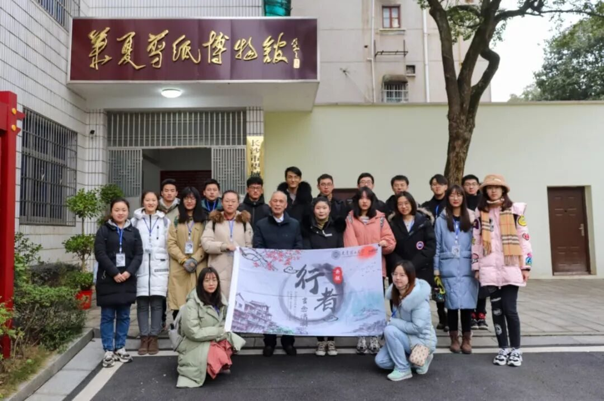
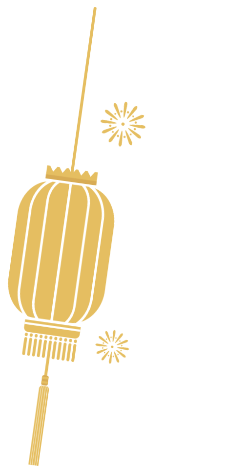

【赋墨沉湘·一】沅芷湘兰，相见恨晚。

沅芷湘兰，相见恨晚
••••
说起来，当我被任命为此次团队的负责人的时候，我是懵逼的。😂本来想在团队里认真做好本职工作并好好学习提高自己在文字之外的知识水平的我，现在被迫开始站在更高的高度上看待并审视这个团队，并且承担起这个团队发生的一切。这对我来说是一个很大的挑战。🤔


因为今年的春节与放假十分的临近，而接任时距离抢票已经十分临近，团队的主题确认与队员招募已经迫在眉睫。在老队长的悉心帮扶下，这一期的队员招募我们采取了几乎是历年最强大的攻势。投在b12的视频还有门口的立绘海报，让我们打破了行者无疆历年的面试数量记录，也为团队的发展带来了令人震惊的新鲜血液。面试时各位大佬的龙争虎斗，让我在面试时也不禁瑟瑟发抖。在经过了紧张刺激的面试与调查之后，我们经过了多方面的综合考量，最终选定了这一届的行者无疆队员。




因为刚刚进入团队就被任命为文字组组长，我需要熟悉文字组内部的处理，所以在上一期的源洄渝州时我仅仅了处理文字组内的事情，很少将自己的目光放在工作范围之外，也正因此我对整个团队的运作相当不熟悉😣。当我被任命为队长的时候，我知道我自己没有也不能对这个团队的细微末节了解太多。不过，我们的每一位组长都是团队的中坚力量，💪他们对自己的岗位与能力的熟识是这个团队产出的质量保证，也是我敢于将每一件具体的事下放的依据。正是由他们的大力帮助，“行者无疆”这个名字才能扬弃的传承下去。

湖南在我原本的印象里仅仅停留在芒果台上，但当我们真正的开始检索湖南的文化时，我们发现了难以置信的现象：中国的半部近代史由湖南人写就，以周敦颐、朱熹、二程为代表的岳麓书院是中国宋明理学的最高峰，还有妇孺皆知的屈原贾谊为代表的屈贾文化在这片大地上源远流长。当时给我的第一个感觉是，湖湘文化似乎为湖南这块“卑湿之地”带来了令人难以置信的精神内核。

湖湘文化与人的相互作用这个研究课题，在我们的调研中逐渐的深入。“吃得苦，耐得烦，不怕死，霸得蛮”这十二个字是我们采访到的每一个湖南人都会提到并认可的湖南精神内核；而“心忧天下、敢为人先、经世致用、实事求是”这种稍微官方的提法则更多的是由所采访的研究员、讲解员等人对湖湘名人的精神提炼。无论是民间流传还是官方认可，湖湘文化的精神在这两种表述中一体两面辩证统一的体现，显示出了湖南人独特的精神特质。




文化调研的意义
我曾问过上一期的队长，文化调研的意义究竟是什么？🤔在我的理解里面，就像第四期第五期我们所谓的以自己的方式传播的非遗也好、文化也好终究只是向大海里扔了一颗石头，仅仅能泛起有限的涟漪，远远没有支教来的有意义。他对我回答说，我们的行动或许很微薄，但是总有人会看到我们的行动并感慨道：“原来这世上还真的有这么一群人在认真的做这些事，在认真的想将我们的文化传承下去。”
老队长的观点，在我在这次调研的很多地方都遇到了极其正面的回应。
第一个是我在贾谊故居发放问卷时。当时接我问卷的是湘雅医学院大三的学长，当我在他们填写问卷时闲聊我们做的是什么文化调研，他们有些震惊地感慨道，没想到你们真的在认真搞社会调研，这个东西不是糊弄糊弄就完了么。
第二个是在华夏剪纸博物馆，馆长老先生在得知我们的到来之后十分高兴，因为我们是第一个从北方来的高校学生。
第三个还是在贾谊故居，当采访完贾谊故居的馆长之后，他随口说了一句，你们弄得这个比我们当年弄得好多了。我们的队员也遇到了许多类似的事情，我觉得我们确实很好的用我们的“行者无疆精神”影响了别人，但是我觉得我感受到的意义远非于此。

我们的调研走遍了湖南省所有的国家一级博物馆，走进了众多具有湖湘文化特色的街区，走访了许多对湖湘文化某一方面研究深入的权威人士。在行程中，湖南这片土地总是给人一种新奇却又熟悉的感觉。在刘少奇纪念馆的讲解员为我们系统阐述湖湘文化对刘少奇同志的影响的时候，当最后一天走进湖南省博物馆看到几乎所有的调研结果都在那里以具象化的形式呈现的时候，我不禁想到：果然，这次走对了。✌




对于我来说，当我走过岳麓书院了解湖湘文化的前世今生，走过贾谊故居了解经世致用的诞生，走过刘少奇同志纪念馆被感动，走过湖南省博物馆见到完整的湖湘文化的时候，我渐渐地感觉到，这次的调研的主体早就从我们的眼前的物变成了我们自己。
与在重庆的震撼与思考不同，这一次的我是湖湘文化的参与者而不是旁观者，湖湘文化的优秀品质渐渐地成为了你自身的一部分，引起你内心某一部分的共鸣。或许每一次文化调研不应该仅仅只是形而上学的静态的反映，而应该将自己投入的所调研的文化中，让你所调研的文化的优秀成分成为你自己的一部分。这种学习，远比在课本上的静态学习更有意义。


或许，这就是我理解的文化调研的意义吧。


来源 | 行者无疆实践团
文字 | 段智然
排版 | 康艳虎
审核 | 段智然 康艳虎 黄玲
行者无疆实践团
QQ：2758025831

随行者一起认识世界
长按二维码